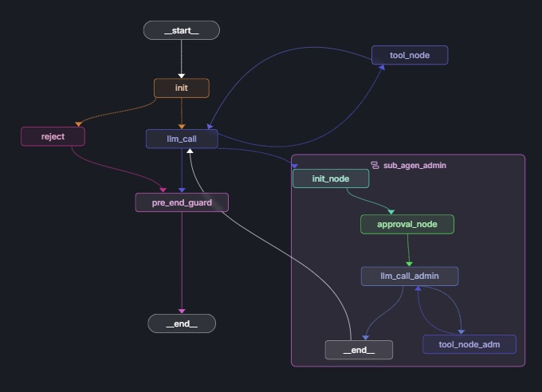
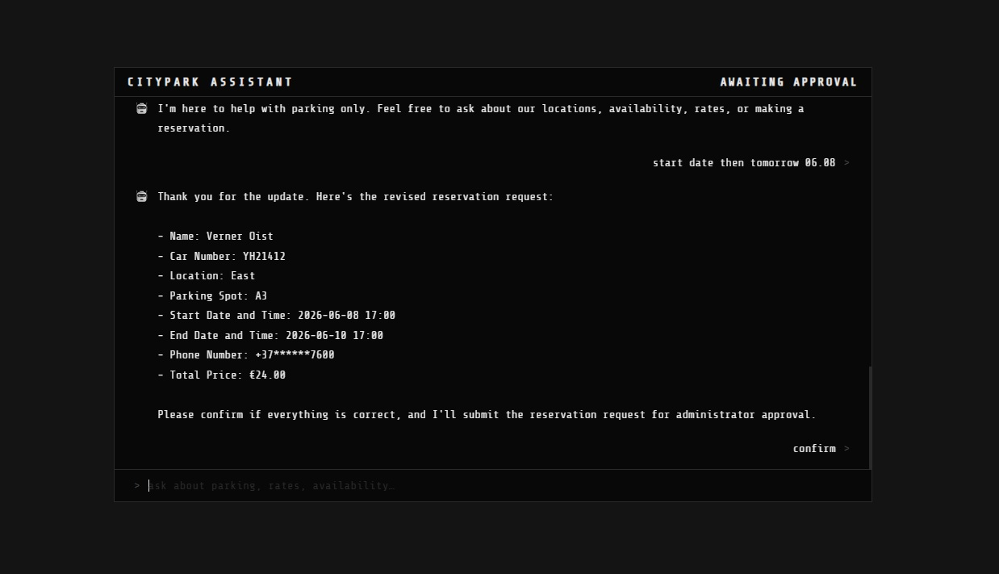
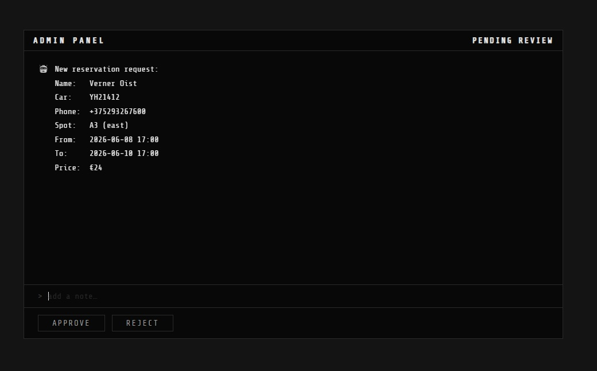

Architecture
A four-stage pipeline orchestrated by LangGraph. A chatbot helps the user, hands a confirmed reservation to a human admin, and an MCP server records the approved booking.
Static data — parking info in a FAISS vector store (LlamaIndex).
Live data — availability & bookings in SQLite (the BOOKINGS table).
Stack — LangGraph · FastAPI · LlamaIndex · SQLite · FastMCP · Anthropic/OpenAI.
Agent & Logic
Two agents share one graph state. The main agent loops over tools to answer the user; the admin sub-agent pauses for a human, then records the result.
Agent 1 — RAG Chatbot
user question ↓ guard_route ↓ llm_call ⇄ tool_node ↓ escalate → Agent 2 (Admin, if ready for approval) ↓ pre_end_guard → reply
- guard_route — blocks off-topic / unsafe input
- llm_call — answers & calls tools (RAG, availability, price, reserve)
- escalates a confirmed reservation to Agent 2 (Admin subagent)
- pre_end_guard — hides phone numbers in the reply
Agent 2 — Admin (HITL)
approval (interrupt) ↓ llm_call_admin ⇄ tool_node_adm ↓ saves to BOOKINGS
- approval — pauses for the admin's decision
- resume — applies approve / reject
- on approve — MCP tool saves it; chat is notified
Agent Infrastructure

- init
- resets the per-request loop counter
- llm_call
- main LLM — answers, decides tool calls
- tool_node
- runs tools: RAG, availability, price, reserve
- reject
- canned reply for off-topic / unsafe input
- pre_end_guard
- masks phone numbers before the reply
- sub_agen_admin
- the Admin subagent (nested graph)
- init_node
- sets admin context, clears its channel
- approval_node
- pauses (interrupt) for the decision
- llm_call_admin
- admin LLM — summarizes, calls save tool
- tool_node_adm
- runs the MCP save tool → BOOKINGS
The Application


Deployment
A single-process dev/demo deployment today, with a clear path to scale.
Dev / demo (current)
- single uvicorn worker + InMemorySaver
- .env: ANTHROPIC_API_KEY (or OPENAI_API_KEY + LLM_PROVIDER=openai)
- HF_TOKEN optional — embedding-model download in CI
- CI builds index/DB & runs pytest on push / PR
Scaling to production
- swap InMemorySaver → PostgresSaver, then run multiple workers
- make LLM calls async + add retry / backoff for rate limits
- containerise (Dockerfile) behind a load balancer
The Chatbot & its Tools
A RAG chatbot that answers parking questions, checks live availability, prices a stay, and collects a reservation — using four tools.
Protection & Guardrails
Inputs are screened before the model runs; outputs are screened before they reach the user.
Input guard
- guard_route — a structured-output classifier on every message
- blocks off-topic, prompt-override / jailbreak, and data-extraction attempts
- reject — returns a polite parking-only message
Output & runtime guards
- pre_end_guard — masks phone numbers (regex) in the reply
- grounded answers — facts come from the RAG tool, not invented
- loop guard — caps tool / LLM iterations per request
Performance Testing

- faithfulness
- answer grounded in retrieved context — mean 1.00
- context recall
- needed info was retrieved — mean 1.00
- answer relevancy
- answer addresses the question — mean 0.94
- context precision
- retrieved chunks are on-point — mean 0.93
- noise sensitivity
- robustness to irrelevant context (lower = better)
Human-in-the-Loop Approval
A reservation the user confirms is sent to an admin for approval; once approved, it's stored by the MCP server.
Pause & resume
llm_call → escalate ↓ approval_node interrupt() pauses ↓ admin decides on the admin page ↓ Command(resume=…) resumes on approve / reject
The decision
- /admin/pending — lists paused reservations
- /admin/decision — sends
{decision, reason} - approve → saved & confirmed · reject → status rejected
- state survives the pause via the InMemorySaver checkpointer
The Admin Agent & Feedback
A dedicated subgraph handles the decision, records the result, and reports back to the user.
Admin subgraph
init → approval ↓ llm_call_admin ⇄ tool_node_adm ↓ saves to BOOKINGS
- runs on message_admin — admin chatter never leaks to the user
- tool error → status rejected, asks the chatbot to re-verify
Notifying the user
- on submit, the chat got a pending response
- on decision, the reply is queued to an outbox
- the chat polls /chat/poll and shows the outcome automatically
The MCP Server
Approved reservations are persisted by a standalone MCP server built with FastMCP.
Dictionary_saver tool
- validates the reservation, then stores it in SQLite (the
BOOKINGStable) asapproved - the spot becomes unavailable — availability filters
status = "approved"
Orchestration
LangGraph wires the RAG chatbot, the admin HITL subagent, and the MCP save into a single graph over one shared state.
One graph, shared state
- a single StateGraph over a shared MessagesState
- the admin agent is nested as the sub_agen_admin node
- should_continue routes: tools · admin · end
Served & persisted
- FastAPI exposes
/chat,/chat/poll,/admin/* - InMemorySaver checkpointer enables interrupt / resume
- also compiled without a checkpointer for the eval script
Testing
78 pytest tests across every module, run on each push and pull request.
What's covered
- test_nodes — guards, tools, phone masking, routing
- test_nodes_admin — HITL interrupt / resume, approve / reject
- test_mcp — save tool: insert & validation
- test_tools · test_retriever · test_api — tools, RAG, endpoints
How
- the LLM is mocked — deterministic, no API cost
- MCP tests use a temporary SQLite DB
- HITL tested with real interrupt() / Command(resume)
Load Testing
Locust simulates concurrent users to measure throughput and latency.
What it drives
- ChatUser — POST
/chat+ GET/chat/poll - AdminUser — GET
/admin/pending - reports requests/s, latency, error rate
Continuous Integration
GitHub Actions runs the whole suite automatically on every push and pull request.
The pipeline
- install uv + Python 3.13, then uv sync
- build the FAISS index & seed the SQLite DB
- run uv run pytest — the full suite
Config
- secrets: ANTHROPIC_API_KEY, HF_TOKEN
- caches the HuggingFace embedding model between runs